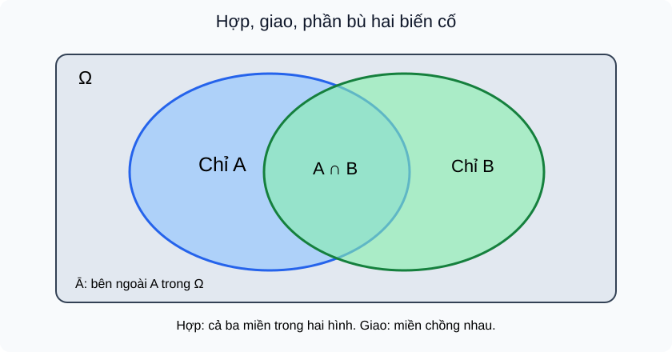

Bài 28. Biến cố hợp, biến cố giao, biến cố độc lập
TOÁN 11 · CHƯƠNG VIII · KẾT NỐI TRI THỨC · TẬP HAI
Khi hai điều kiện cùng xuất hiện, chữ “hoặc” khác chữ “và” thế nào? Vì sao hai lần lấy vật có trả lại và không trả lại cho hai kiểu biến cố khác nhau?
1. Khám phá kiến thức
Khi chọn ngẫu nhiên một học sinh, một tấm thẻ hoặc một vật trong hộp, ta thường quan tâm không chỉ một điều kiện. Chẳng hạn, một gia đình có ti vi hoặc máy vi tính, một bạn biết chơi cả hai môn, hoặc kết quả của lần rút thứ nhất có làm thay đổi cơ hội ở lần thứ hai hay không. Để trả lời chính xác, ta cần hiểu ba mối quan hệ giữa các biến cố: hợp, giao và độc lập. Bài học đi từ những kết quả có thể liệt kê được, rồi mới diễn đạt bằng kí hiệu toán học.
1.1. Biến cố hợp
Giả sử có sáu tấm thẻ như nhau, ghi các số từ \(1\) đến \(6\); ta rút ngẫu nhiên một thẻ, mỗi thẻ có cơ hội như nhau. Không gian mẫu là \(\Omega=\{1;2;3;4;5;6\}\). Gọi \(A\) là biến cố “rút được số chẵn” và \(B\) là biến cố “rút được số lớn hơn \(3\)”. Khi liệt kê kết quả, ta có \(A=\{2;4;6\}\) và \(B=\{4;5;6\}\).
Nếu đề hỏi “số chẵn hoặc lớn hơn \(3\)”, thẻ số \(4\) và thẻ số \(6\) vẫn được chấp nhận: chúng thỏa cả hai điều kiện, nên chắc chắn thỏa điều kiện “hoặc”. Tập kết quả cần tìm là \(\{2;4;5;6\}\), tức \(A\cup B\). Ta viết mỗi kết quả một lần, không phải hai lần vì số \(4\) nằm trong cả \(A\) và \(B\).

Điều quan trọng không phải thuộc một kí hiệu mới mà là biết kết quả nào khiến câu nói đúng. Trong cuộc khảo sát về thiết bị của một gia đình, “có ti vi hoặc máy vi tính” bao gồm cả gia đình có đủ hai thiết bị. Đó cũng là lí do phép hợp rất hữu ích khi câu hỏi nói “ít nhất một điều kiện xảy ra”.
Vận dụng. Có tám thẻ ghi số \(1\) đến \(8\). Gọi \(C\) là biến cố “số chẵn” và \(D\) là biến cố “số lớn hơn \(5\)”. Hãy liệt kê \(C\cup D\) rồi giải thích vì sao số \(6\) chỉ được viết một lần.
Đối chiếu
Lời giải. \(C=\{2;4;6;8\}\), \(D=\{6;7;8\}\), nên \(C\cup D=\{2;4;6;7;8\}\). Các số \(6,8\) thuộc cả hai biến cố nhưng mỗi số chỉ là một kết quả của phép thử.
Kiểm lỗi: Nếu viết lặp \(6\) hoặc \(8\), em đã ghép hai danh sách mà chưa lấy tập hợp các kết quả phân biệt. Hãy khoanh mỗi số thẻ một lần và thử lại.
1.2. Biến cố giao
Vẫn với sáu thẻ ở trên, hãy đổi chữ “hoặc” thành “và”: số được rút phải vừa chẵn vừa lớn hơn \(3\). Lúc này chỉ có hai số \(4,6\) phù hợp. Chúng nằm ở phần chồng nhau của hai hình tròn, tức \(A\cap B=\{4;6\}\). SGK còn dùng kí hiệu ngắn \(AB\) cho biến cố giao; ở đây \(AB\) không phải phép nhân hai số.
Cách đọc này cũng giúp diễn đạt những câu dài. Nếu \(M\) là “gia đình có ti vi” và \(N\) là “gia đình có máy vi tính”, thì “có cả hai” là \(M\cap N\). Còn “có đúng một trong hai” gồm hai khả năng không thể xảy ra đồng thời: có ti vi nhưng không có máy vi tính, hoặc ngược lại. Ta cần phép hợp \((M\cap\overline N)\cup(\overline M\cap N)\), chứ không phải phép giao \(M\cap N\). Còn “không có cả ti vi lẫn máy vi tính” (không có loại nào) là \(\overline{M\cup N}=\overline M\cap\overline N\).
Nhắc lại biến cố đối: \(\overline A\) là biến cố “\(A\) không xảy ra”. Vì vậy “chỉ \(A\), không \(B\)” được viết \(A\cap\overline B\), còn “không điều kiện nào xảy ra” là \(\overline A\cap\overline B\). Những kí hiệu này chỉ viết gọn một câu nói; muốn dùng đúng, trước hết hãy đọc rõ mỗi kết quả phải thỏa điều kiện nào.
Vận dụng. Rút ngẫu nhiên một thẻ (các thẻ có cơ hội như nhau) đánh số từ \(1\) đến \(12\). Gọi \(E\): “số chia hết cho \(2\)” và \(F\): “số chia hết cho \(3\)”. Hãy tìm \(E\cap F\) và liệt kê các số thỏa chỉ một trong hai biến cố.
Đối chiếu
Lời giải. \(E=\{2;4;6;8;10;12\}\) và \(F=\{3;6;9;12\}\). Số vừa chia hết cho \(2\) vừa chia hết cho \(3\) là \(6,12\), nên \(E\cap F=\{6;12\}\). Chỉ \(E\) có \(\{2;4;8;10\}\), chỉ \(F\) có \(\{3;9\}\). Vậy đúng một biến cố xảy ra đối với \(\{2;3;4;8;9;10\}\).
Kiểm lỗi: Nếu đưa \(6\) vào tập “chỉ một”, hãy thử đọc lại chữ chỉ: số \(6\) thỏa cả hai, nên phải loại khỏi yêu cầu này.
1.3. Biến cố độc lập
Hợp và giao nói những kết quả nào thuộc một biến cố. Độc lập trả lời câu hỏi khác: biết biến cố này đã xảy ra có làm thay đổi cơ hội xảy ra của biến cố kia không? Chẳng hạn, hai bạn mỗi người gieo một con xúc xắc cân đối. Biết bạn thứ nhất gieo ra số chẵn không giúp đoán kết quả trên con xúc xắc của bạn thứ hai. Giả sử hai bạn gieo độc lập, không ảnh hưởng tới nhau, khi đó các biến cố được chọn theo từng con xúc xắc là độc lập.
Nhưng khi hai bạn lần lượt lấy bi từ cùng một hộp, kết luận có thể khác. Giả sử hộp có \(4\) bi đỏ và \(5\) bi xanh, các bi giống nhau về kích thước. Mỗi bạn lấy ngẫu nhiên một bi với các bi có cơ hội như nhau; nếu hoàn lại, trả bi thứ nhất vào hộp và trộn đều trước lượt hai. Ta quan tâm \(A\): “lần đầu lấy bi đỏ” và \(B\): “lần hai lấy bi xanh”.
| Cách lấy | Nếu lần đầu lấy đỏ, cơ hội lần hai xanh | Nếu lần đầu lấy xanh, cơ hội lần hai xanh |
|---|---|---|
| Trả bi lại trước lượt hai | \(5/9\) | \(5/9\) |
| Không trả lại | \(5/8\) | \(4/8\) |
Ở hàng thứ nhất, dù lần đầu lấy màu gì thì hộp của lần hai vẫn có \(4\) đỏ, \(5\) xanh. Việc \(A\) xảy ra hay không không làm thay đổi cơ hội của \(B\): hai biến cố độc lập. Ở hàng thứ hai, thành phần hộp thay đổi theo lần đầu; hai xác suất \(5/8\) (lượt đầu đỏ) và \(4/8\) (lượt đầu xanh) khác nhau. Vậy không độc lập. Ta không thể nhìn hai lần rút tách nhau về thời gian rồi tự kết luận chúng độc lập.
Cũng cần phân biệt xung khắc với độc lập. Với một lần gieo xúc xắc, “ra \(2\)” và “ra \(5\)” không thể cùng xảy ra (xung khắc), nhưng biết đã ra \(2\) khiến cơ hội “ra \(5\)” trở thành \(0\); như vậy chúng không độc lập. Ngược lại, hai con xúc xắc độc lập vẫn có thể đồng thời cho kết quả chẵn. Độc lập không có nghĩa “không bao giờ cùng xảy ra”.
Vận dụng. Một hộp có \(2\) bi đỏ và \(1\) bi xanh; lấy hai lượt. Gọi \(C\): “lượt một lấy đỏ”, \(D\): “lượt hai lấy đỏ”. Hãy so sánh xác suất của \(D\) khi có trả lại và không trả lại, xét riêng trường hợp \(C\) xảy ra và \(C\) không xảy ra. Kết luận về độc lập.
Đối chiếu
Lời giải. Nếu có trả lại, lượt hai luôn còn \(2\) đỏ trong \(3\) bi, nên cơ hội lấy đỏ là \(2/3\) trong cả hai trường hợp: \(C,D\) độc lập. Nếu không trả lại: khi \(C\) xảy ra, còn \(1\) đỏ trong \(2\) bi nên xác suất \(D\) là \(1/2\); khi \(C\) không xảy ra, đã lấy bi xanh nên cả \(2\) bi còn lại đều đỏ, xác suất \(D\) là \(1\). Hai cơ hội khác nhau nên \(C,D\) không độc lập.
Kiểm lỗi: Nếu viết \(2/3\) cho cả hai lần rút không hoàn lại, em đã giữ nguyên mẫu số và thành phần hộp dù bi đầu tiên không được trả lại. Hãy vẽ lại hộp sau lượt một.
2. Kiến thức SGK
2.1. Biến cố hợp
Cho hai biến cố \(A,B\) của cùng một phép thử với không gian mẫu \(\Omega\). Biến cố “\(A\) hoặc \(B\) xảy ra” gọi là biến cố hợp, kí hiệu \(A\cup B\). Đó là tập gồm mọi kết quả thuộc \(A\) hoặc thuộc \(B\), kể cả kết quả thuộc cả hai.
Ví dụ minh họa. Với \(\Omega=\{1;2;3;4;5;6\}\), \(A=\{2;4;6\}\) và \(B=\{4;5;6\}\), ta có \(A\cup B=\{2;4;5;6\}\). Một kết quả xuất hiện trong cả hai biến cố vẫn chỉ được liệt kê một lần.
Kiến thức cần nhớ: Chữ “hoặc” trong biến cố hợp có nghĩa ít nhất một điều kiện đúng; không phải “chỉ một”.
2.2. Biến cố giao
Biến cố “cả \(A\) và \(B\) đều xảy ra” gọi là biến cố giao, kí hiệu \(AB\), cũng được biểu diễn bởi tập hợp \(A\cap B\). Chỉ các kết quả thuộc đồng thời cả hai tập mới thuộc biến cố này.
Ví dụ minh họa. Với hai tập ở mục 2.1, \(AB=A\cap B=\{4;6\}\). Nếu \(A\cap B=\varnothing\), hai biến cố xung khắc: không có kết quả nào khiến chúng cùng xảy ra.
Biến cố đối: \(\overline A\) là biến cố \(A\) không xảy ra; \(\overline A=\Omega\setminus A\). Nhờ đó ta có thể viết “chỉ \(A\)” là \(A\cap\overline B\), “không \(A\) cũng không \(B\)” là \(\overline A\cap\overline B\), và “đúng một trong hai” là \((A\cap\overline B)\cup(\overline A\cap B)\).
2.3. Biến cố độc lập
Hai biến cố \(A,B\) được gọi là độc lập nếu việc xảy ra hoặc không xảy ra của biến cố này không làm thay đổi xác suất xảy ra của biến cố kia.
Nhận biết trong mô hình: Nếu hai kết quả do hai phép thử không ảnh hưởng lẫn nhau tạo ra, chẳng hạn mỗi bạn gieo một con xúc xắc riêng, tính độc lập được bảo đảm khi mô hình thực sự giả thiết hai phép thử độc lập. Trong các lần rút từ cùng một hộp, phải xem có hoàn lại hay không và vật được lấy có làm thay đổi thành phần hộp. Không dựa vào cảm giác “hai việc khác nhau” để kết luận.
Nếu \(A,B\) độc lập thì các cặp \(A,\overline B\); \(\overline A,B\); và \(\overline A,\overline B\) cũng độc lập. Tính độc lập không đồng nghĩa với xung khắc.
Giới hạn của bài: Bài 28 tập trung hiểu và nhận biết mối quan hệ giữa biến cố. Công thức tính xác suất của hợp được học ở Bài 29; công thức nhân đối với hai biến cố độc lập được học ở Bài 30. Không tự áp dụng một công thức khi chưa xác định đúng biến cố và điều kiện của nó.
3. Ví dụ
3.1. Biểu diễn biến cố bằng hợp và giao
Đề bài. Rút ngẫu nhiên một thẻ đánh số từ \(1\) đến \(12\). Gọi \(A\): “số nguyên tố”, \(B\): “số chẵn”. Hãy liệt kê \(A\cup B\), \(AB\) và số kết quả thuộc mỗi biến cố.
Phân tích: Xác định tập hợp của từng biến cố trước. Số \(2\) vừa là số nguyên tố vừa là số chẵn; \(1\) không phải số nguyên tố.
Lời giải. \(A=\{2;3;5;7;11\}\), \(B=\{2;4;6;8;10;12\}\). Vì \(2\) thuộc cả hai tập nên \(AB=\{2\}\). Hợp lấy tất cả kết quả thuộc ít nhất một tập: \(A\cup B=\{2;3;4;5;6;7;8;10;11;12\}\). Vậy hợp có \(10\) kết quả, giao có \(1\) kết quả.
Kiểm lại: Các số \(1,9\) không thuộc hợp; \(2\) chỉ được tính một lần. \(5+6-1=10\) cũng khớp số phần tử đã liệt kê.
3.2. Dữ liệu hai câu lạc bộ
Đề bài. Một nhóm có \(12\) học sinh; \(7\) bạn tham gia câu lạc bộ Vẽ, \(6\) bạn tham gia câu lạc bộ Cờ, trong đó \(3\) bạn tham gia cả hai. Chọn đều một học sinh. Hỏi có bao nhiêu bạn thuộc ít nhất một câu lạc bộ, bao nhiêu bạn thuộc cả hai và bao nhiêu bạn không tham gia câu lạc bộ nào?
Phân tích: Khi cộng \(7+6\), ba bạn tham gia cả hai đã được tính hai lần. Sửa số trùng trước khi tìm những bạn ở ngoài cả hai.
Lời giải. Số bạn ở ít nhất một câu lạc bộ là \(7+6-3=10\). Số bạn ở cả hai là \(3\). Số bạn không tham gia câu lạc bộ nào là \(12-10=2\).
Kiểm lại: Có \(7-3=4\) bạn chỉ Vẽ, \(6-3=3\) bạn chỉ Cờ, \(3\) bạn cả hai, \(2\) bạn không tham gia; tổng \(4+3+3+2=12\).
3.3. Diễn đạt chính xác “đúng một” và “không cái nào”
Đề bài. Chọn ngẫu nhiên một gia đình. Gọi \(M\): “có ti vi”, \(N\): “có máy vi tính”. Hãy viết bằng các phép toán biến cố: (a) có ít nhất một thiết bị; (b) có cả hai; (c) có đúng một trong hai; (d) không có thiết bị nào trong hai loại.
Phân tích: Phân biệt “hoặc”, “và”, “chỉ một” và “không loại nào”. Trường hợp (c) gồm hai khả năng riêng, không phải chỉ \(M\cup N\).
Lời giải. (a) \(M\cup N\); (b) \(M\cap N\); (c) \((M\cap\overline N)\cup(\overline M\cap N)\); (d) \(\overline M\cap\overline N\), cũng là \(\overline{M\cup N}\).
Kiểm lại: Trường hợp gia đình có cả hai thiết bị thỏa (a), (b) nhưng không thỏa (c) hoặc (d). Gia đình không có thiết bị nào chỉ thỏa (d).
3.4. Hai xúc xắc và tính độc lập
Đề bài. Minh và Sơn mỗi người gieo một con xúc xắc cân đối, việc gieo của người này không ảnh hưởng người kia. Gọi \(A\): “xúc xắc Minh ra số chẵn” và \(B\): “xúc xắc Sơn ra số chia hết cho \(3\)”. Giải thích vì sao \(A,B\) độc lập.
Phân tích: Hãy xét cơ hội của \(B\) khi đã biết kết quả phía Minh, rồi so với khi chưa biết. Kết quả của Sơn vẫn có sáu khả năng đồng đều.
Lời giải. Trên xúc xắc của Sơn, các kết quả chia hết cho \(3\) là \(3,6\), nên xác suất xảy ra \(B\) là \(2/6=1/3\). Việc Minh gieo được số chẵn hay lẻ không làm thay đổi sáu khả năng của Sơn, nên xác suất của \(B\) vẫn là \(1/3\). Tương tự, kết quả của Sơn không làm thay đổi xác suất của \(A\). Do đó \(A,B\) độc lập.
Kiểm lại: Có thể cùng xảy ra \(A\) và \(B\), ví dụ Minh ra \(2\), Sơn ra \(3\). Độc lập không có nghĩa xung khắc.
3.5. Hai lượt lấy bi: có hoàn lại và không hoàn lại
Đề bài. Hộp có \(4\) bi đỏ và \(5\) bi xanh giống nhau. Hai bạn lần lượt rút mỗi người một bi. Gọi \(A\): “bạn đầu rút đỏ”, \(B\): “bạn sau rút xanh”. Trong trường hợp (a) trả bi lại trước lượt sau; (b) không trả bi lại, hãy xét \(A,B\) có độc lập không.
Phân tích: Không xét số lượt bằng cảm giác. Hãy đếm lại thành phần hộp trước lượt thứ hai trong hai khả năng: lần đầu rút đỏ và lần đầu rút xanh.
Lời giải. (a) Có hoàn lại: trước lượt sau luôn có \(4\) đỏ và \(5\) xanh; cơ hội rút xanh là \(5/9\) dù \(A\) xảy ra hay không, nên \(A,B\) độc lập. (b) Không hoàn lại: nếu lần đầu rút đỏ thì còn \(5\) xanh trong \(8\) bi, cơ hội của \(B\) là \(5/8\). Nếu lần đầu rút xanh thì còn \(4\) xanh trong \(8\) bi, cơ hội của \(B\) là \(4/8\). Hai cơ hội khác nhau, nên \(A,B\) không độc lập.
Kiểm lại: Số bi sau lần đầu không hoàn lại phải là \(8\), không phải \(9\); màu bi còn lại khác nhau theo lần đầu.
3.6. Xung khắc nhưng không độc lập
Đề bài. Gieo một con xúc xắc cân đối. \(C\): “ra \(2\)”, \(D\): “ra \(5\)”. Hai biến cố này có xung khắc không? Có độc lập không?
Phân tích: Xung khắc là không thể cùng xảy ra; độc lập là biết biến cố này xảy ra có ảnh hưởng xác suất biến cố kia hay không.
Lời giải. Một lần gieo chỉ cho một số chấm, nên \(C\cap D=\varnothing\): hai biến cố xung khắc. Ban đầu xác suất ra \(5\) là \(1/6\). Nếu đã biết kết quả ra \(2\), xác suất ra \(5\) là \(0\). Vì xác suất của \(D\) thay đổi khi biết \(C\), hai biến cố không độc lập.
Kiểm lại: Không được kết luận “xung khắc nên độc lập”. Với hai biến cố đều có khả năng xảy ra, việc một biến cố xảy ra làm biến cố kia không thể xảy ra chính là sự phụ thuộc.
4. Lỗi thường gặp và cách tự khắc phục
Mở từng mục để xem sai ở đâu, vì sao sai và cách sửa.
4.1. Hiểu “hoặc” là “chỉ một”
Sai ở đâu: Khi đề hỏi “chẵn hoặc lớn hơn \(3\)” với thẻ \(1\) đến \(6\), loại bỏ số \(4\) và \(6\) vì chúng thỏa cả hai điều kiện.
Vì sao sai: Hợp \(A\cup B\) nhận các kết quả thỏa ít nhất một điều kiện, gồm cả phần giao.
Cách sửa: Viết riêng hai tập, lấy mọi phần tử xuất hiện trong ít nhất một tập và ghi mỗi kết quả đúng một lần; tự thử lại \(A=\{1;2\},B=\{2;3\}\).
4.2. Nhầm giao với hợp
Sai ở đâu: Viết \(A\cap B\) bằng tất cả phần tử xuất hiện ở một trong hai tập, hoặc gọi \(AB\) là phép nhân hai số.
Vì sao sai: Giao là đồng thời thuộc cả hai; SGK dùng \(AB\) để kí hiệu biến cố giao.
Cách sửa: Chọn từng kết quả và hỏi hai câu: “Có thuộc \(A\) không?” và “Có thuộc \(B\) không?”. Chỉ giữ kết quả trả lời có ở cả hai câu.
4.3. Viết “đúng một biến cố” thành biến cố hợp
Sai ở đâu: Dùng \(A\cup B\) khi đề yêu cầu chỉ \(A\) hoặc chỉ \(B\), không đồng thời cả hai.
Vì sao sai: \(A\cup B\) vẫn nhận kết quả ở \(A\cap B\). Điều kiện “đúng một” phải loại phần giao.
Cách sửa: Tách hai trường hợp \(A\cap\overline B\) và \(\overline A\cap B\), rồi lấy hợp. Thử một kết quả thỏa cả hai để tự kiểm xem nó đã bị loại chưa.
4.4. Nhận định độc lập chỉ vì hai lần rút diễn ra khác thời điểm
Sai ở đâu: Cho rằng rút bi lần một và lần hai luôn độc lập dù không hoàn lại.
Vì sao sai: Rút không hoàn lại làm thay đổi số bi và tỉ lệ màu, nên lần rút sau có thể phụ thuộc màu lần trước.
Cách sửa: Ghi thành phần hộp sau từng khả năng của lượt một. Nếu cơ hội của lượt hai khác nhau, hai biến cố không độc lập.
4.5. Đồng nhất xung khắc và độc lập
Sai ở đâu: Thấy hai biến cố không thể xảy ra cùng lúc rồi kết luận chúng độc lập.
Vì sao sai: Nếu \(A\) xảy ra khiến \(B\) không thể xảy ra, thông tin về \(A\) đã thay đổi cơ hội của \(B\) (khi \(B\) ban đầu có xác suất dương).
Cách sửa: Kiểm hai câu hỏi riêng: “Cả hai có thể cùng xảy ra không?” (xung khắc) và “Biết một biến cố xảy ra có đổi cơ hội của biến cố kia không?” (độc lập).
4.6. Đếm đúng kết quả nhưng kết luận sai xác suất
Sai ở đâu: Thấy một biến cố có \(3\) kết quả trong không gian mẫu \(6\) phần tử rồi tự động viết xác suất \(3/6\).
Vì sao sai: Cách đếm này chỉ cho xác suất khi sáu kết quả đồng khả năng. Nếu cách rút có thiên lệch, số phần tử không đủ để tính xác suất.
Cách sửa: Trước khi lấy tỉ lệ số trường hợp, kiểm xem đề đã cho các kết quả đồng khả năng hay chưa. Nếu chưa, cần mô hình xác suất thực sự.